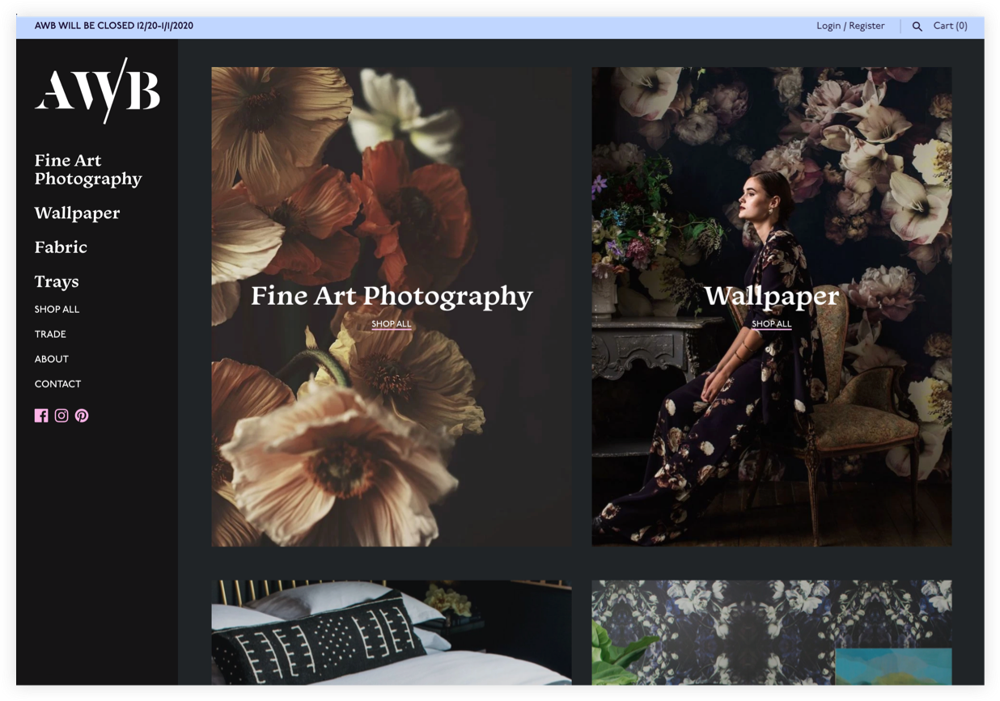

The AWB website has a few bold elements. The site is in dark-scale to create a “dark and moody” vibe, as requested by Ash. The heading font is Monarcha: a groovy, unique font from Isaco Type. And the site navigation is vertical and static along the left side of the site. The design for this site is intentionally bold and dark because Ash’s art deserves an appropriate backdrop.
The homepage focuses on large visuals and minimal text. Ash’s collections [prints, wallpaper and fabric] are represented in a visual grid.

 The homepage also features a slideshow of Ash’s artwork in people’s homes and a list of her current featured products.
The homepage also features a slideshow of Ash’s artwork in people’s homes and a list of her current featured products.
Fine Art Photography
Ash’s fine art photography is available for sale on the site via a variety of sizes and framing options. The fine art photography collection page features a three column masonry grid.
 The product page for fine art photography includes the option to select size, frame and quantity. You can also view a demo of the print in an illustrated living room.
The product page for fine art photography includes the option to select size, frame and quantity. You can also view a demo of the print in an illustrated living room.
Wallpaper
Ash’s wallpaper is available by the roll, in mural and grasscloth. Her wallpaper is turn-your-head kind of beautiful. The site design showcases her incredible wallpaper collection through a clean, dark design.
Wallpaper Calculator
Ash’s new site includes an interactive wallpaper calculator, where customers can input their room dimensions and get an immediate quote. Before, customers had to email Ash for any wallpaper inquiries. Now they can budget for her wallpaper immediately! I made this wallpaper calculator possible by applying a custom pricing formula to a Shopify app.